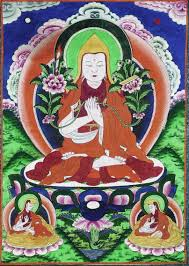

<p>
    <span style="font-size:12px">
        Цже Цонкапа, Цонгкапа, Цонкхапа, Цзонкхапа, Цзонхава, Цзонкапа, Цонгкапа, Цзонхапа, это все варианты имени одного и того же тибетского религиозного деятеля, философа и великого буддийского учителя. Это человек вошёл в историю как реформатор тибетского буддизма и основатель школы гелуг-па , которая стала в Тибете наиболее многочисленной, и играющей важнейшую роль в политике Тибета и близлежащих стран.<br />
        Цонкапа родился в 1357 году, это был десятый день десятого месяца, в долине Цонка провинции Амдо восточного Тибета. Цонкапа, которого в Тибете почтительно называют Дже Ринпоче, что в переводе означает &laquo;досточтимый&raquo; и &laquo;драгоценный&raquo;, никогда не хвастался личными духовными свершениями, а о глубине его медитативного опыта свидетельствовали лишь его случайные оговорки.<br />
        Цже Цонкапа не скрывал своих близких отношений с Бодхисаттвой Манджушри, от которого напрямую получал наставления и которого мог видеть так же отчётливо, как и любого обычного человека. В этой связи практически на всех буддийских изображениях и скульптурах его изображают с атрибутами Бодхисатвы Манджушри &ndash; Меч и Книга
    </span>
</p>
